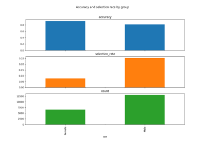

fairlearn.reductions.ErrorRate#
- class fairlearn.reductions.ErrorRate(*, costs=None)[source]#
Misclassification error as a moment.
A classifier \(h(X)\) has the misclassification error equal to
\[P[h(X) \ne Y]\]It is also possible to specify costs for false positives and false negatives. The error then evaluates to
\[c_{FP} P[h(X)=1, Y=0] + c_{FN} P[h(X)=0, Y=1]\]where \(c_{FP}\) and \(c_{FN}\) are the costs of false positive and false negative errors respectively. The standard misclassification error corresponds to \(c_{FP}=c_{FN}=1.0\).
- Parameters:
- costsdict
The dictionary with keys
'fp'and'fn'containing the costs of false positives and false negatives. If none are provided costs of 1.0 are assumed.
- load_data(X, y, *, sensitive_features, control_features=None)[source]#
Load the specified data into the object.
- short_name = 'Err'#
- property total_samples#
Return the number of samples in the data.
Gallery examples#

GridSearch with Census Data